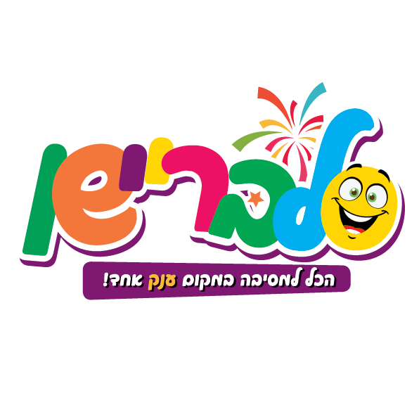

אתר היפוך טקסט
1. הפוך את כל הטקסט
2. הפוך את סדר המילים
3. הפוך כל מילה בנפרד
4. הפוך לאותיות גדולות
5. הפוך לאותיות קטנות
6. החלף בין גדולות לקטנות
7. הסר תנועות
8. הסר עיצורים
9. צופן ROT13
10. הסר רווחים
11. הסר תווים כפולים
12. מיין מילים (אלפביתי)
13. מיין תווים (אלפביתי)
14. שכפל כל תו
15. הסר סימני פיסוק
16. ספירת מילים
17. ספירת תווים
18. הסר מספרים
19. הכנס רווחים בין תווים
20. החלף רווחים בקווים תחתונים
21. הפוך סדר משפטים
22. ראש אות בכל מילה
23. הפוך את כל האותיות לקטנות
24. הסר רווחים מיותרים
25. טקסט מראה (מקור + הפוך)
26. הסטת אותיות (קיסר 1)
27. הסר מילים כפולות
28. ערבב תווים
29. החלף תנועות בכוכבית
30. החלף עיצורים בכוכבית
31. אותיות בסירוגין
32. מיין מילים לפי אורך
33. הסר את האות האחרונה מכל מילה
34. הוסף מחרוזת קבועה בסוף כל מילה
35. הוסף מחרוזת קבועה בתחילת כל מילה
36. המרת מילים לפיג לטין
37. הפוך סדר מילים תוך שמירת פיסוק
38. ספירת משפטים
39. קידוד Base64
40. פענוח Base64
הפוך טקסט
העתק טקסט